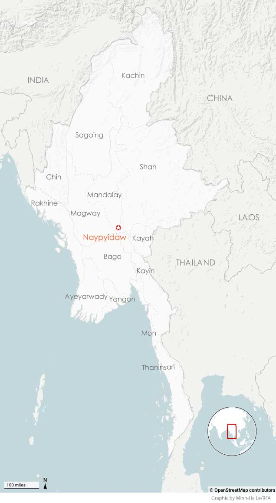

Battle lines in Myanmar are constantly moving. Rebel forces have been on the march, scoring a series of victories in the past year. While those victories against the nation’s powerful military would have once seemed impossible, ousting the ruling junta is by no means certain.
Before the military seized power in a February 2021 coup, there were about two dozen ethnic armed groups – the largest of them having tens of thousands of fighters in their ranks.
Since the coup, more than 250 People’s Defense Forces, or PDFs, have emerged, with tens of thousands more people under arms. Among them are young adults who have swapped a civilian life in the Myanmar heartland to fight for freedom.
Some fight alongside the battle-hardened ethnic armies in border regions -- finding common cause against a military that toppled an elected government and stole their dreams of democracy.
The military brands these fighters as terrorists bent on splitting the nation. But it’s the coup itself that has splintered Myanmar.
More than three years of fighting has displaced more than 3 million people inside the country, and refugees continue to spill across borders to the west, south and east. While the military maintains control of the country’s largest cities, anti-junta forces have made unprecedented territorial gains.
Many of Myanmar’s Gen Z fighters dream of a federal system of government in which this multi-ethnic nation’s many constituencies agree to share power. Those hopes remain distant, so what will the future bring?
For the first time since the coup, an RFA team based outside of the country has returned to Myanmar to speak to people on the front lines in one eastern region to learn about their stories – and their hopes for the revival of their blood-stained country.